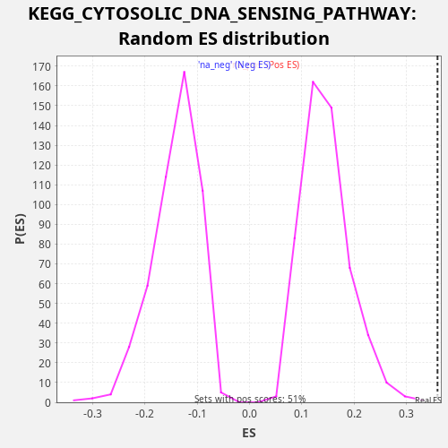

Profile of the Running ES Score & Positions of GeneSet Members on the Rank Ordered List
The same image in compressed SVG format
| Dataset | rnk |
| Phenotype | NoPhenotypeAvailable |
| Upregulated in class | na_pos |
| GeneSet | KEGG_CYTOSOLIC_DNA_SENSING_PATHWAY |
| Enrichment Score (ES) | 0.35930866 |
| Normalized Enrichment Score (NES) | 2.4626021 |
| Nominal p-value | 0.0 |
| FDR q-value | 0.0026636487 |
| FWER p-Value | 0.022 |
| SYMBOL | RANK IN GENE LIST | RANK METRIC SCORE | RUNNING ES | CORE ENRICHMENT | |
|---|---|---|---|---|---|
| 1 | CCL5 | 28 | 38.657 | 0.0289 | Yes |
| 2 | IL6 | 115 | 12.852 | 0.0549 | Yes |
| 3 | POLR3K | 358 | 4.401 | 0.0732 | Yes |
| 4 | ADAR | 670 | 1.846 | 0.0880 | Yes |
| 5 | TBK1 | 788 | 1.447 | 0.1124 | Yes |
| 6 | POLR1D | 927 | 1.135 | 0.1359 | Yes |
| 7 | IKBKG | 1172 | 0.770 | 0.1540 | Yes |
| 8 | RIPK1 | 1771 | 0.341 | 0.1545 | Yes |
| 9 | IRF3 | 1832 | 0.323 | 0.1818 | Yes |
| 10 | IRF7 | 2087 | 0.248 | 0.1994 | Yes |
| 11 | IKBKB | 2258 | 0.214 | 0.2213 | Yes |
| 12 | POLR3B | 2546 | 0.164 | 0.2373 | Yes |
| 13 | NFKBIB | 2650 | 0.150 | 0.2624 | Yes |
| 14 | CXCL10 | 2900 | 0.122 | 0.2803 | Yes |
| 15 | POLR1C | 3482 | 0.075 | 0.2817 | Yes |
| 16 | RELA | 3745 | 0.061 | 0.2989 | Yes |
| 17 | AIM2 | 3779 | 0.059 | 0.3276 | Yes |
| 18 | CASP1 | 4537 | 0.033 | 0.3201 | Yes |
| 19 | POLR3H | 4785 | 0.026 | 0.3381 | Yes |
| 20 | CHUK | 5431 | 0.015 | 0.3363 | Yes |
| 21 | NFKBIA | 5578 | 0.013 | 0.3593 | Yes |
| 22 | IKBKE | 7703 | 0.001 | 0.2837 | No |
| 23 | POLR3G | 7718 | 0.001 | 0.3133 | No |
| 24 | PYCARD | 7901 | 0.000 | 0.3346 | No |
| 25 | POLR3C | 8191 | 0.000 | 0.3505 | No |
| 26 | POLR3GL | 12306 | -0.006 | 0.1757 | No |
| 27 | NFKB1 | 12574 | -0.008 | 0.1927 | No |
| 28 | MAVS | 14519 | -0.033 | 0.1261 | No |
| 29 | IL1B | 15861 | -0.078 | 0.0895 | No |
| 30 | IL18 | 15962 | -0.083 | 0.1149 | No |
| 31 | POLR3D | 16170 | -0.094 | 0.1348 | No |
| 32 | POLR3A | 18148 | -0.404 | 0.0666 | No |
| 33 | POLR3F | 19443 | -2.220 | 0.0324 | No |

{kind=link}
{kind=link}